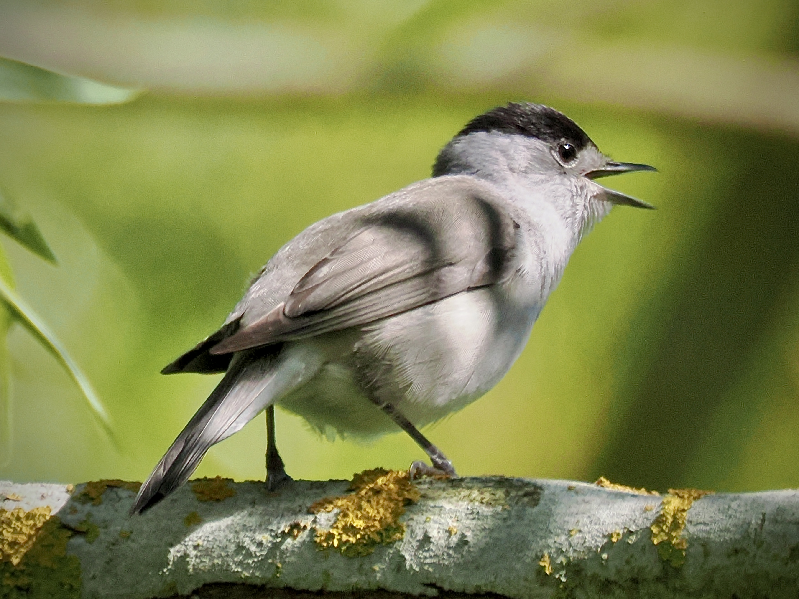

Eurasian Blackcap
Sylvia atricapilla

A small warbler with a diffferent coloured cap. Male is grey with a black cap; female has a brown cap. Sometimes I find bird naming rather unfortunate, in that many names only serve to describe a certain plumage (usually the breeding male). But with the Blackcap I empathise since most of the time you would see a male rather than a female, as males are more conspicuous and sing more often.